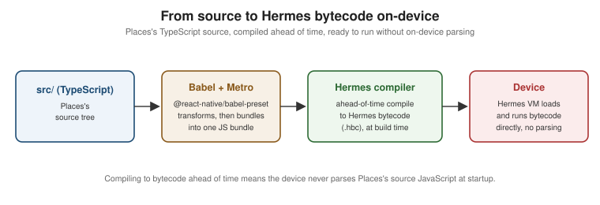

The JavaScript Runtime and Hermes
|
This content was generated with the assistance of AI and should be verified against the official documentation before being relied on in production. |
Places's code is JavaScript/TypeScript, but it runs in neither a browser nor Node.js — it runs inside Hermes, React Native’s own JavaScript engine, after Metro and Babel have already transformed it. This page covers that environment: what syntax gets transformed, which globals actually exist, and why Hermes — rather than a browser’s JavaScript engine — is what executes the result.
What Metro and Babel Transform
Metro (covered in full on Tooling: Metro and
Project Structure, later in this section) bundles Places's source, and @react-native/babel-preset is what
actually transforms it on the way in — modern syntax the target Hermes version does not parse natively (JSX,
newer ECMAScript proposals, TypeScript’s own type syntax) is compiled down to something Hermes accepts, the same
role Babel plays for a web app targeting older browsers.
The Available Globals
A React Native app has no document and no window-as-DOM — there is no page to query and no DOM tree to
walk — but it is not a bare JavaScript sandbox either: the platform explicitly polyfills a browser-shaped subset
of globals so that ordinary networking and timing code, and much of the npm ecosystem written against those
APIs, works unmodified.
| Available | Not available |
|---|---|
|
|
|
|
|
|
|
|
|
CSS or any stylesheet-related global |
|
|
|
|
|
|
|
Local persistence has no localStorage equivalent built in; Places uses expo-sqlite for its own data
(introduced on Storage and Offline Support, later in this
section) precisely because no browser-shaped storage global exists to fall back to.
Hermes: a Purpose-Built Engine
Hermes is a JavaScript engine Meta built specifically for React Native, rather than embedding an existing browser engine, for two reasons that matter directly to a mobile app’s user-perceived quality:
-
Startup time. Hermes compiles JavaScript to bytecode ahead of time, as part of the app’s build, rather than parsing and compiling source JavaScript on the device the moment the app launches — the app’s first screen appears sooner because the device only ever has to load and execute bytecode, never parse source.
-
Memory. Hermes’s bytecode format and runtime were designed for a memory-constrained mobile process, not a desktop browser tab, which keeps Places's baseline memory footprint lower than a general-purpose engine not tuned for that constraint would allow.
Hermes V1 has been the default engine since React Native 0.84, meaning Places — created fresh on 0.87 — uses it with no configuration. A project needing to pin the previous Hermes compiler generation temporarily
(migrating a large codebase off a Hermes-V1-only behavior, for example) can still select it explicitly through
the native build configuration (Android’s gradle.properties hermesFlags, iOS’s Podfile Hermes options), but
Places takes no such override.
JavaScriptCore and V8: History
Before Hermes existed, React Native ran on JavaScriptCore (Apple’s engine, also usable as an explicit alternative to Hermes on some configurations) and, less commonly, V8 through some custom builds. Both remain mentionable when reading pre-Hermes-era blog posts or a very old codebase’s native build files, but neither is a supported alternative in a current 0.87 project — Hermes is the only engine Places, or any React Native app created today, ships with.
Timers and requestIdleCallback Replace InteractionManager
InteractionManager — previously used to defer expensive work until running animations/interactions finished — was removed in React Native 0.87. Its job is now covered directly by the standard timer and idle-callback
globals already listed above: requestIdleCallback defers work to whenever the JavaScript thread is actually
idle (the direct replacement for InteractionManager.runAfterInteractions), and an ordinary setTimeout remains
the right tool wherever a fixed delay, rather than "whenever the thread is free," is what is actually needed.
Code: Hermes Capability, AbortController Fetch, and requestIdleCallback
A runtime check for Hermes — rarely needed in Places itself, since 0.87 always ships it, but useful in a library that must also run under a non-Hermes engine or under Node.js during testing:
declare const HermesInternal: object | undefined;
export function isRunningOnHermes(): boolean {
return typeof HermesInternal !== 'undefined';
}Places's apiClient.ts (introduced earlier as the
fetch + AbortController wrapper) uses AbortController to cancel a request that takes too long, rather than
leaving it to resolve into a screen the user has already navigated away from:
// src/lib/apiClient.ts (excerpt)
export async function fetchWithTimeout(url: string, timeoutMs = 8000): Promise<Response> {
const controller = new AbortController();
const timeoutId = setTimeout(() => controller.abort(), timeoutMs);
try {
return await fetch(url, { signal: controller.signal });
} finally {
clearTimeout(timeoutId);
}
}Deferring a non-urgent computation — re-sorting Places's cached list after a background sync, for example — until the JavaScript thread is actually idle:
function scheduleIdleResort(resort: () => void) {
requestIdleCallback(
(deadline) => {
if (deadline.timeRemaining() > 0 || deadline.didTimeout) {
resort();
}
},
{ timeout: 2000 },
);
}async/await and Promises themselves — the language feature both snippets above build on — are not
React-Native-specific; see
Asynchronous JavaScript for the full treatment of
Promise states, chaining, and async/await.
